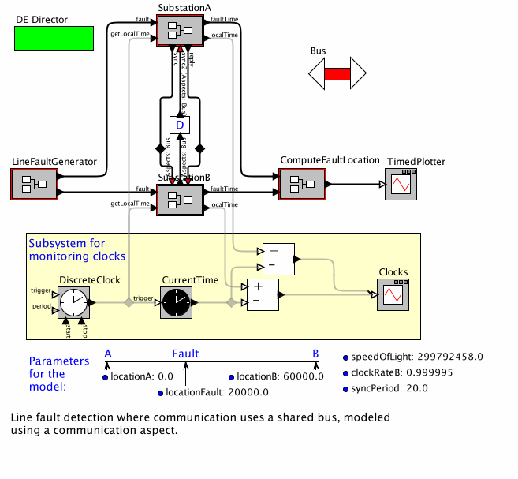

Skip to main content
UC Berkeley EECS Dept.
Quick Links
People
Download
Publications
Home
Objectives
Ptolemy II
Other software
People
Sponsors
Publications
Conferences
Presentations
FAQ
Download
Ptolemy Home
Up
Skip to sidebar
LineFaultModelWithQM
Below is a browsable image of the model.
To view or save the MoML file for this model,
click here
.
For a chapter overview,
click here
.

Your browser does not support JavaScript so moving the mouse over the actors will not display their parameters. To enable JavaScript, consult the security preferences of your browser.
See
http://support.microsoft.com/gp/howtoscript
for details.